Preparando os dados.
## region population sex age education income statusquo vote
## 1 N 175000 M 65 P 35000 1.008 Y
## 2 N 175000 M 29 PS 7500 -1.296 N
## 3 N 175000 F 38 P 15000 1.231 Y
## 4 N 175000 F 49 P 35000 -1.032 N
## 5 N 175000 F 23 S 35000 -1.105 N
## 6 N 175000 F 28 P 7500 -1.047 N## region population sex age education
## C :600 Min. : 3750 F:1379 Min. :18.0 P :1107
## M :100 1st Qu.: 25000 M:1321 1st Qu.:26.0 PS : 462
## N :322 Median :175000 Median :36.0 S :1120
## S :718 Mean :152222 Mean :38.5 NA's: 11
## SA:960 3rd Qu.:250000 3rd Qu.:49.0
## Max. :250000 Max. :70.0
## NA's :1
## income statusquo vote
## Min. : 2500 Min. :-1.803 A :187
## 1st Qu.: 7500 1st Qu.:-1.002 N :889
## Median : 15000 Median :-0.046 U :588
## Mean : 33876 Mean : 0.000 Y :868
## 3rd Qu.: 35000 3rd Qu.: 0.969 NA's:168
## Max. :200000 Max. : 2.049
## NA's :98 NA's :17Excluindo indecisos e eleitores que pretendem se abster.
Eliminando níveis de ‘vote’ que não aparecem na nova amostra.
## region population sex age education
## C :384 Min. : 3750 F:843 Min. :18.0 P :688
## M : 56 1st Qu.: 25000 M:914 1st Qu.:25.0 PS :354
## N :237 Median :175000 Median :36.0 S :708
## S :489 Mean :151138 Mean :38.1 NA's: 7
## SA:591 3rd Qu.:250000 3rd Qu.:49.0
## Max. :250000 Max. :70.0
##
## income statusquo vote
## Min. : 2500 Min. :-1.726 N:889
## 1st Qu.: 15000 1st Qu.:-1.085 Y:868
## Median : 15000 Median :-0.169
## Mean : 36768 Mean : 0.004
## 3rd Qu.: 35000 3rd Qu.: 1.172
## Max. :200000 Max. : 1.714
## NA's :47 NA's :3Uma breve análise descritiva
##
## C M N S SA
## N 0.55 0.32 0.43 0.44 0.58
## Y 0.45 0.68 0.57 0.56 0.42Tabela de frequências de intenção de voto segundo a região do eleitor.
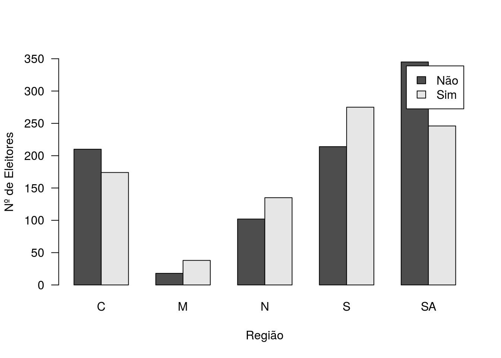
Gráfico de barras - intenção de voto vs região.
barplot(table(Chile2$vote, Chile2$sex), beside = T, las = 1, xlab = 'Sexo',
ylab = 'Nº de Eleitores', legend = c('Não','Sim'))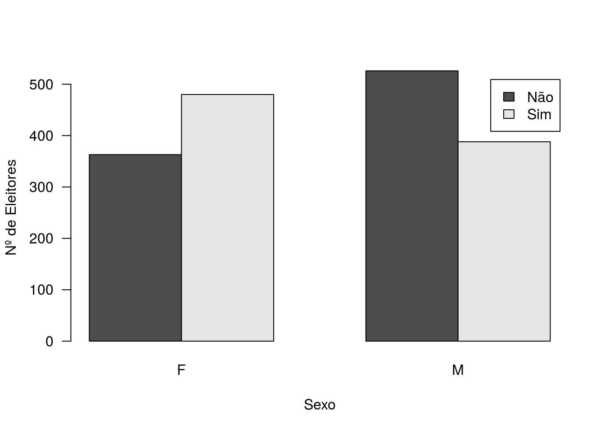
Gráfico de barras - intenção de voto vs sexo
barplot(table(Chile2$vote, Chile2$education), beside = T, las = 1, xlab = 'Escolaridade',
ylab = 'Nº de Eleitores', legend = c('Não','Sim'))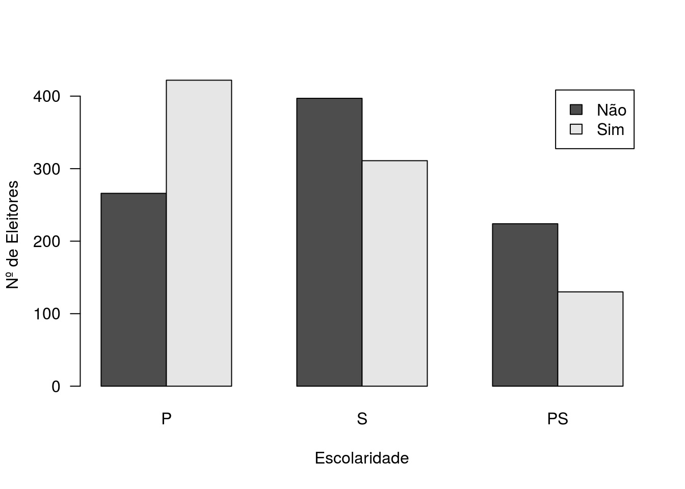
Gráfico de barras - intenção de voto vs Educação
boxplot(Chile2$age ~ Chile2$vote, xlab = 'Voto', ylab = 'Idade de eleitores',
names = c('Não','Sim')) 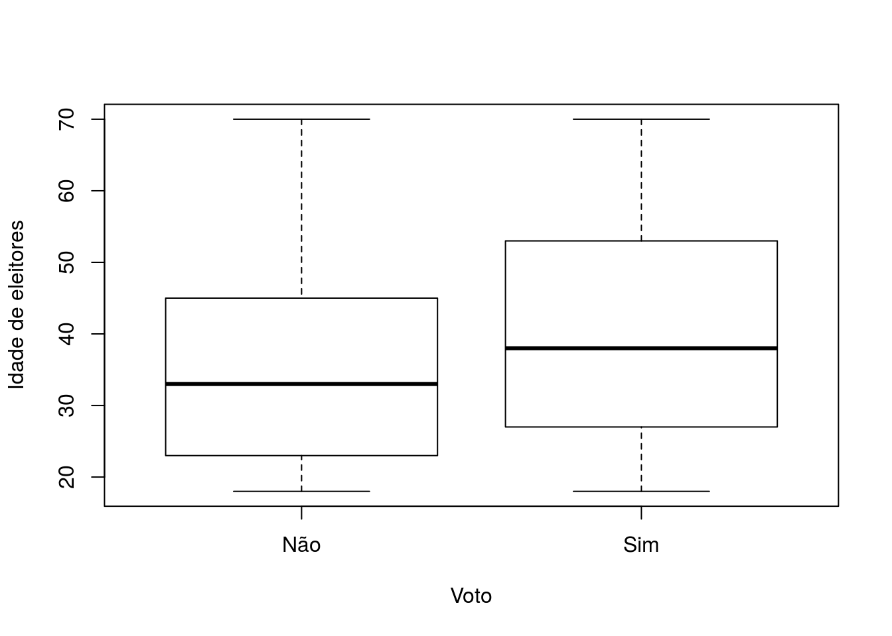
Boxplot de idade versus intenção de voto.
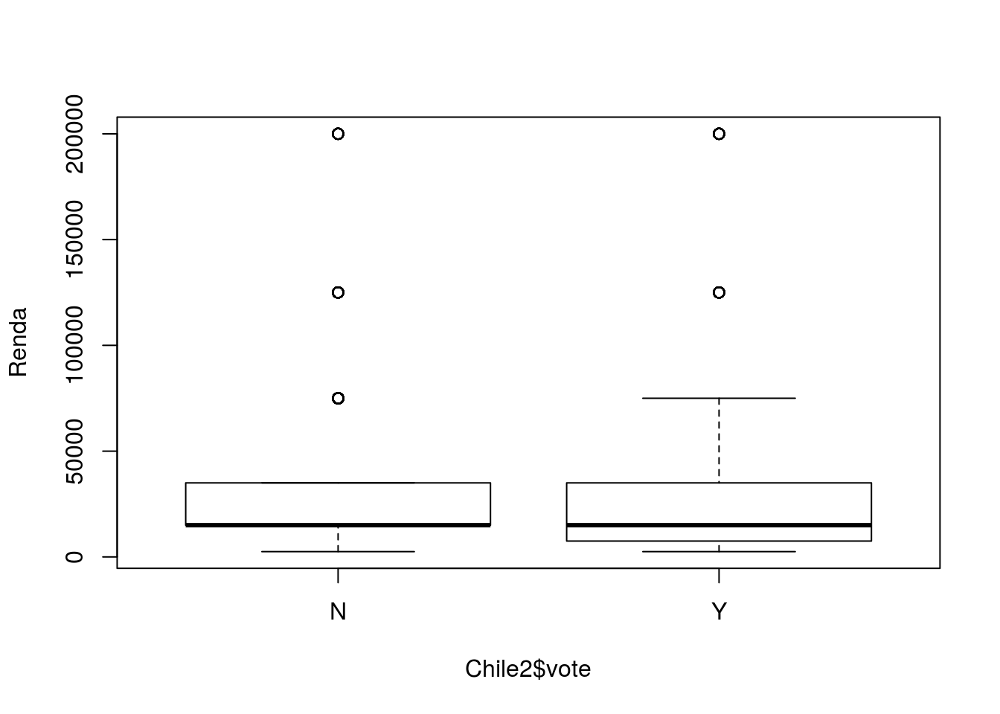
Boxplot de renda versus intenção de voto.
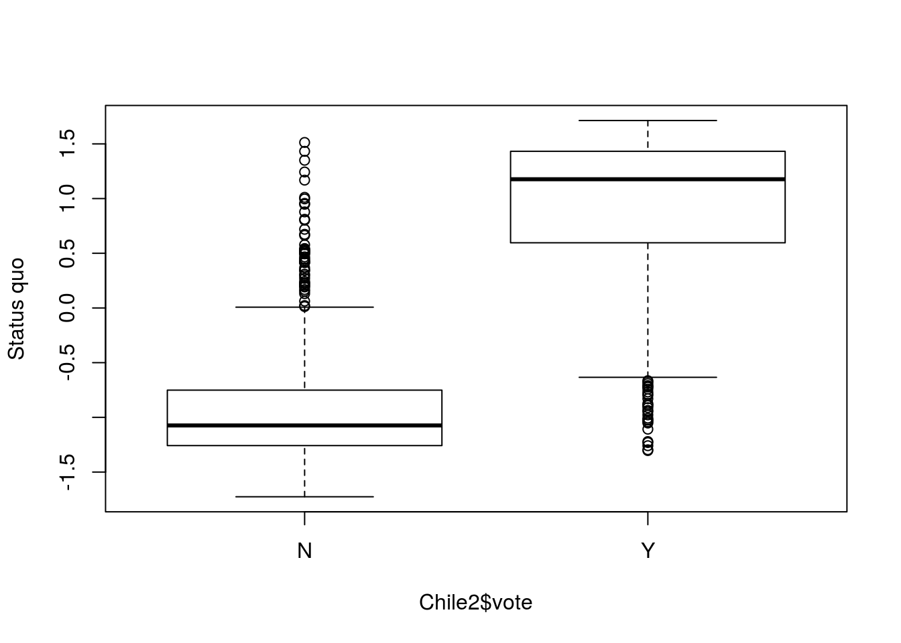
Boxplot de statusquo versus intenção de voto.
Vamos ajustar um glm para a intenção de voto, considerando distribuição binomial com função de ligação logito.
Chile3 <- na.omit(Chile2) # Eliminando da base as linhas com NA's.
intvoto <- glm(vote ~ ., family = binomial(link = 'logit'), data = Chile3)
summary(intvoto) # Resumo do modelo ajustado. ##
## Call:
## glm(formula = vote ~ ., family = binomial(link = "logit"), data = Chile3)
##
## Deviance Residuals:
## Min 1Q Median 3Q Max
## -3.201 -0.275 -0.134 0.203 2.862
##
## Coefficients:
## Estimate Std. Error z value Pr(>|z|)
## (Intercept) 1.05e+00 4.59e-01 2.28 0.0227 *
## regionM 7.07e-01 6.02e-01 1.17 0.2403
## regionN -9.96e-02 3.59e-01 -0.28 0.7813
## regionS -3.04e-01 2.93e-01 -1.04 0.2985
## regionSA -3.01e-01 3.40e-01 -0.88 0.3762
## population 1.28e-06 1.41e-06 0.90 0.3671
## sexM -5.52e-01 2.04e-01 -2.70 0.0069 **
## age 7.11e-04 7.47e-03 0.10 0.9242
## educationS -6.57e-01 2.44e-01 -2.69 0.0070 **
## educationPS -9.68e-01 3.46e-01 -2.80 0.0052 **
## income -2.97e-06 2.86e-06 -1.04 0.2981
## statusquo 3.23e+00 1.52e-01 21.18 <2e-16 ***
## ---
## Signif. codes: 0 '***' 0.001 '**' 0.01 '*' 0.05 '.' 0.1 ' ' 1
##
## (Dispersion parameter for binomial family taken to be 1)
##
## Null deviance: 2360.29 on 1702 degrees of freedom
## Residual deviance: 703.48 on 1691 degrees of freedom
## AIC: 727.5
##
## Number of Fisher Scoring iterations: 6Nota-se menor intenção de votos favoráveis ao regime dentre os homens, dentre os eleitores com maior escolaridade e maior intenção quanto maior o status-quo.
É evidente (e até mesmo previsível) que a variável statusquo seja extremamente relacionada à intenção de voto (no caso, ao voto favorável), sendo os efeitos das demais covariáveis bastante modestos se comparados a ela. O que aconteceria se tirássemos ela do modelo?
##
## Call:
## glm(formula = vote ~ region + population + sex + age + education +
## income, family = binomial(link = "logit"), data = Chile3)
##
## Deviance Residuals:
## Min 1Q Median 3Q Max
## -1.960 -1.058 -0.619 1.065 1.983
##
## Coefficients:
## Estimate Std. Error z value Pr(>|z|)
## (Intercept) 1.10e-01 2.19e-01 0.50 0.61443
## regionM 7.40e-01 3.24e-01 2.28 0.02258 *
## regionN 6.48e-01 1.80e-01 3.61 0.00031 ***
## regionS 4.82e-01 1.47e-01 3.27 0.00108 **
## regionSA 5.08e-01 1.77e-01 2.87 0.00413 **
## population -4.48e-06 7.45e-07 -6.01 1.8e-09 ***
## sexM -5.87e-01 1.04e-01 -5.65 1.6e-08 ***
## age 1.52e-02 3.72e-03 4.09 4.3e-05 ***
## educationS -5.10e-01 1.24e-01 -4.10 4.1e-05 ***
## educationPS -1.01e+00 1.70e-01 -5.94 2.8e-09 ***
## income 6.70e-06 1.40e-06 4.79 1.7e-06 ***
## ---
## Signif. codes: 0 '***' 0.001 '**' 0.01 '*' 0.05 '.' 0.1 ' ' 1
##
## (Dispersion parameter for binomial family taken to be 1)
##
## Null deviance: 2360.3 on 1702 degrees of freedom
## Residual deviance: 2160.4 on 1692 degrees of freedom
## AIC: 2182
##
## Number of Fisher Scoring iterations: 4Observe que alguns efeitos que anteriormente não apresentavam significância estatística agora apresentam. Vamos optar pelo modelo sem a inclusão de statusquo.
## Analysis of Deviance Table (Type II tests)
##
## Response: vote
## LR Chisq Df Pr(>Chisq)
## region 19.2 4 0.00071 ***
## population 37.3 1 1.0e-09 ***
## sex 32.3 1 1.3e-08 ***
## age 16.8 1 4.0e-05 ***
## education 37.8 2 6.2e-09 ***
## income 23.4 1 1.3e-06 ***
## ---
## Signif. codes: 0 '***' 0.001 '**' 0.01 '*' 0.05 '.' 0.1 ' ' 1Os testes das razões de verossimilhanças indicam a significância estatística das variáveis incluídas no modelo.
## Analysis of Deviance Table
##
## Model: binomial, link: logit
##
## Response: vote
##
## Terms added sequentially (first to last)
##
##
## Df Deviance Resid. Df Resid. Dev Pr(>Chi)
## NULL 1702 2360
## region 4 41.7 1698 2319 2.0e-08 ***
## population 1 38.3 1697 2280 6.0e-10 ***
## sex 1 35.2 1696 2245 2.9e-09 ***
## age 1 41.3 1695 2204 1.3e-10 ***
## education 2 19.9 1693 2184 4.7e-05 ***
## income 1 23.4 1692 2160 1.3e-06 ***
## ---
## Signif. codes: 0 '***' 0.001 '**' 0.01 '*' 0.05 '.' 0.1 ' ' 1Qual a diferença com relação ao comando acima mesmo?
Vamos avaliar possível efeito de interação entre sexo e educação:
## Analysis of Deviance Table
##
## Model 1: vote ~ region + population + sex + age + education + income
## Model 2: vote ~ region + population + sex + age + education + income +
## sex:education
## Resid. Df Resid. Dev Df Deviance Pr(>Chi)
## 1 1692 2160
## 2 1690 2158 2 2.57 0.28Repare no efeito não significativo da interação. Deixo como exercício verificar o efeito de alguma interação de interesse e, caso verificada a significância, incluí-la no modelo e analisar os resultados.
Exercício 1 - escrever a equação do modelo ajustado. Interpretar cada um dos coeficientes estimados.
Vamos calcular a probabilidade de intenção de voto pró-Pinochet para eleitores com os seguintes perfis:
Região C, População 25.000, Sexo masculino, idade 35 anos, com ensino superior, renda 120.000. Região M, População 50.000, Sexo feminino, idade 55 anos, com ensino primário, renda 15.000.
datapred <- data.frame(region = c('C','M'), population = c(25000,50000),
sex = c('M','F'), age = c(35,55), education = c('S','P'),
income = c(120000,15000))Criando um data frame para os dados que vamos predizer.
## 1 2
## 0.5588 0.8268estimativas pontuais para as probabilidades de voto para os dois perfis.
Agora, vamos obter ICs 95% para as probabilidades correspondentes aos dois perfis de eleitores.
## $fit
## 1 2
## 0.2365 1.5629
##
## $se.fit
## 1 2
## 0.1912 0.3178
##
## $residual.scale
## [1] 1Estimativas na escla do preditor, pedindo ao R os erros padrões.
Agora, vamos calcular os intervalos de confiança para as probabilidades estimadas.
Para o perfil 1:
ic1 <- p1$fit[1]+c(-1.96,1.96)*p1$se.fit[1] # Intervalo de confiança 95% para o preditor.
ilogit(ic1) # Convertendo os limites para a escala de pi. ## [1] 0.4655 0.6482A função ilogit(x) calcula \(\frac{e^{x}}{e^{x}+1}\)
Para o perfil 2:
ic2 <- p1$fit[2]+c(-1.96,1.96)*p1$se.fit[2] # Intervalo de confiança 95% para o preditor.
ilogit(ic2) ## [1] 0.7191 0.8990Convertendo os limites para a escala de pi.
O pacote effects dispõe de gráficos que permitem visualizar o efeito das covariáveis na resposta.
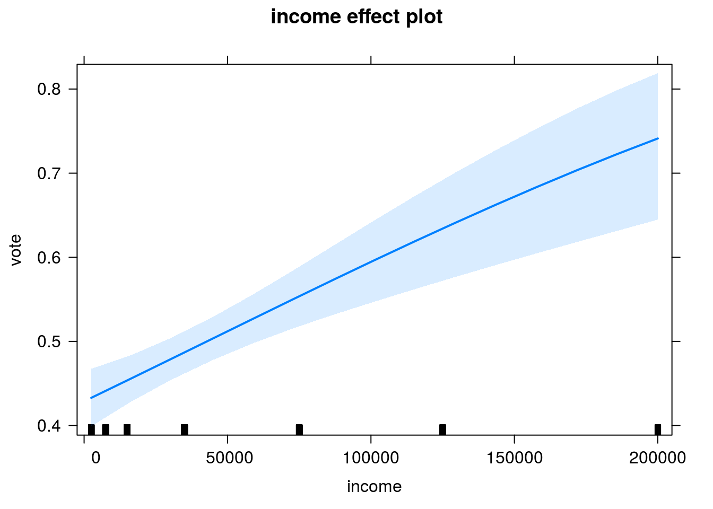
Nesse gráfico, temos as probabilidades estimadas de votos pró-Pinochet (com ICs 95%) segundo a renda. Os valores das demais covariáveis são fixados na média (consultar a documentação da função para maiores detalhes).
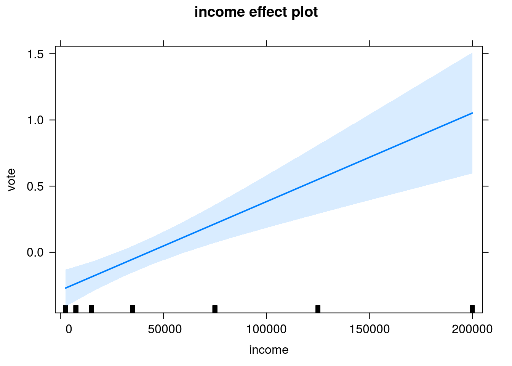
Gráfico do efeito de renda na escala do preditor.
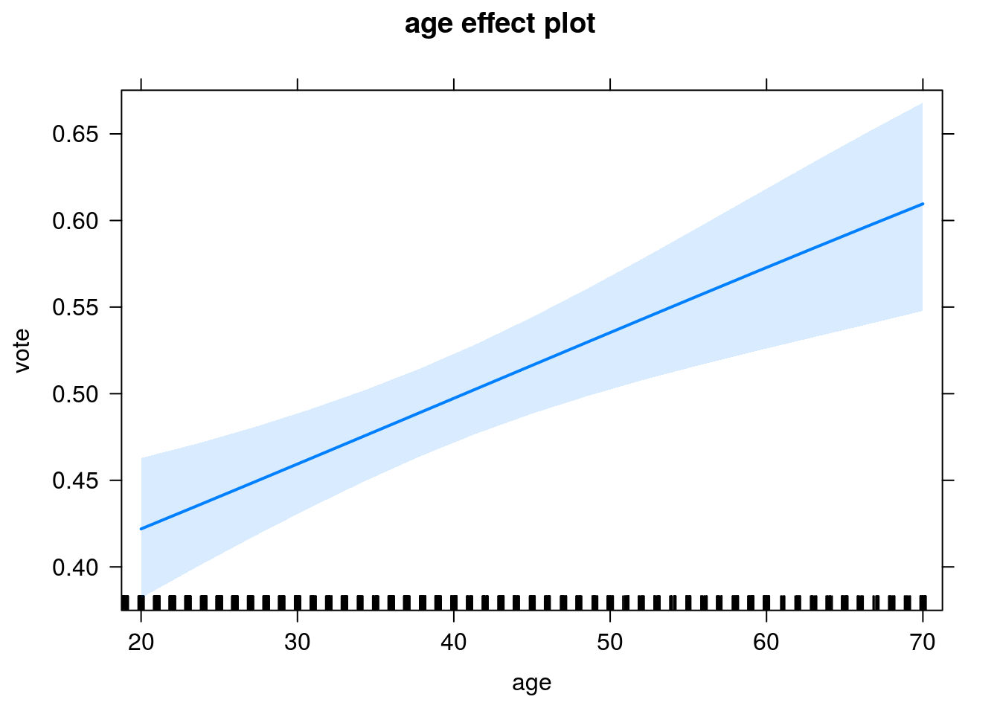
Gráfico para o efeito de idade.
Um pouco de diagnóstico.
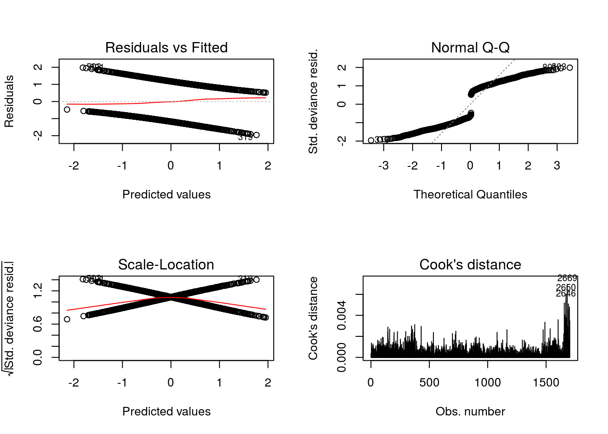
(baseados nos resíduos componentes da deviance). Complicado avaliar.
require(car)
influenceIndexPlot(intvoto4, vars = c('Studentized','Cook','Hat'), id.n = 3, cex = 1.4)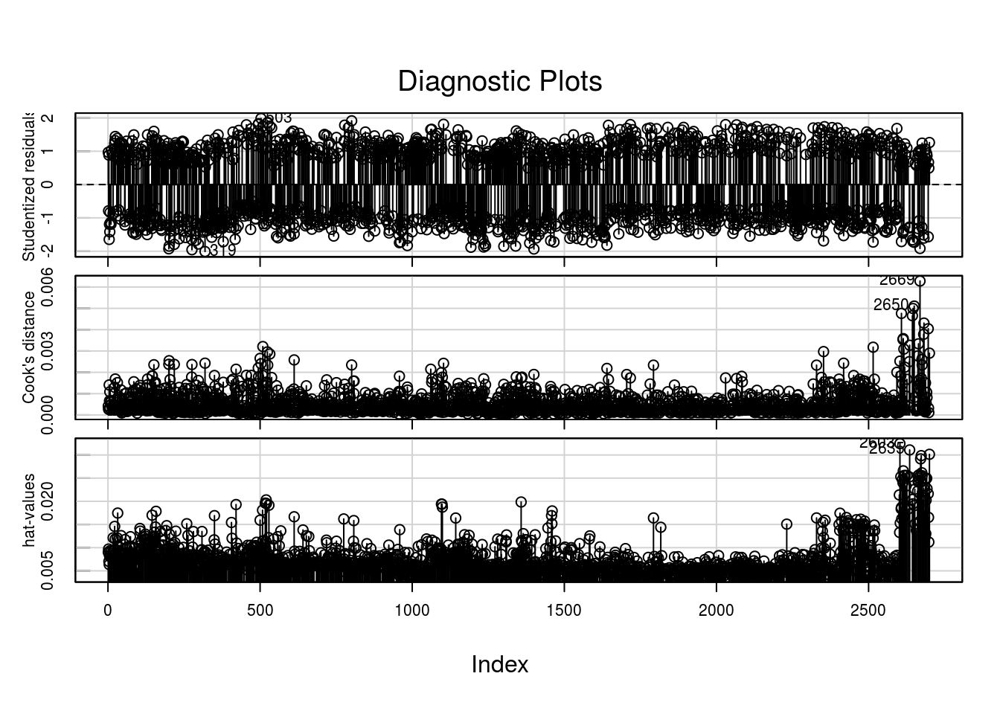
Não há indicativos fortes de out-liers ou observações influentes. Apenas como exercício, vamos verificar o indivíduo com identificação 2669, que produziu maior valor para a distância de Cook.
## region population sex age education income statusquo vote
## 2669 M 87500 F 67 P 7500 -1.296 NRepare que é uma pessoa com características pró-Pinochet (mulher, 67 anos…), mas que vota não. Como a base é bastante grande, dificilmente essa observação tenha, sozinha, muita influência no ajuste. Mas, a título de esercício, vamos ajustar um novo modelo sem ela e comparar os resultados.
intvoto22 <- update(intvoto2, data = Chile3[-which(rownames(Chile3) == '2669'),])
compareCoefs(intvoto2, intvoto22) # Sem grandes mudanças.## Calls:
## 1: glm(formula = vote ~ region + population + sex + age + education +
## income, family = binomial(link = "logit"), data = Chile3)
## 2: glm(formula = vote ~ region + population + sex + age + education +
## income, family = binomial(link = "logit"), data =
## Chile3[-which(rownames(Chile3) == "2669"), ])
##
## Model 1 Model 2
## (Intercept) 0.110 0.100
## SE 0.219 0.219
##
## regionM 0.740 0.819
## SE 0.324 0.330
##
## regionN 0.648 0.648
## SE 0.180 0.180
##
## regionS 0.482 0.483
## SE 0.147 0.148
##
## regionSA 0.508 0.506
## SE 0.177 0.177
##
## population -4.48e-06 -4.46e-06
## SE 7.45e-07 7.45e-07
##
## sexM -0.587 -0.592
## SE 0.104 0.104
##
## age 0.01521 0.01553
## SE 0.00372 0.00373
##
## educationS -0.510 -0.512
## SE 0.124 0.124
##
## educationPS -1.01 -1.01
## SE 0.17 0.17
##
## income 6.70e-06 6.67e-06
## SE 1.40e-06 1.40e-06
## Agora, vamos avaliar a qualidade do ajuste com base nos resíduos quantílicos aleatorizados e no gráfico do resíduo da deviance com envelope simulado.
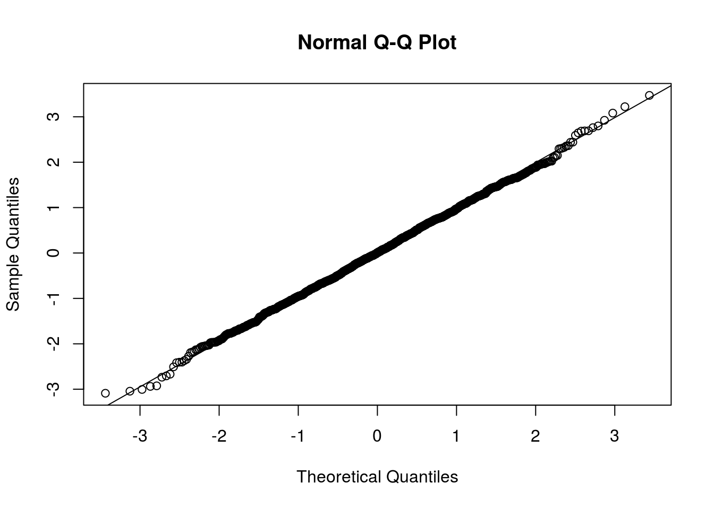
Os resíduos apresentam boa aderência à distribuição Normal, indicativo de bom ajuste.
## Binomial model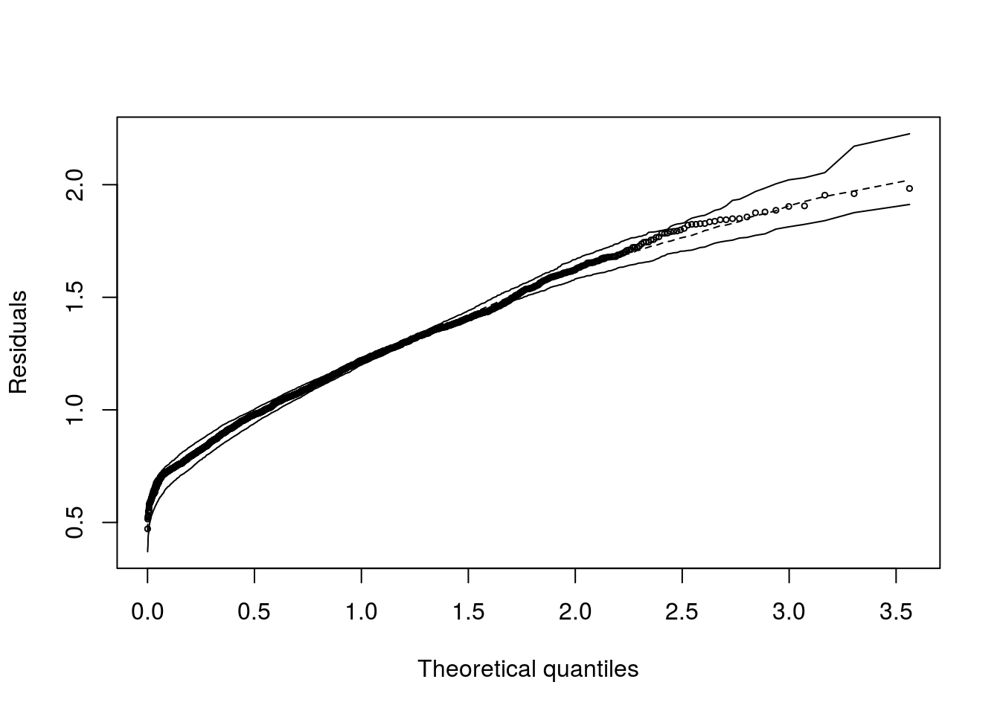
Para finalizar, vamos testar a qualidade do ajuste com base na estatística C de Hosmer e Lemeshow.
Função para o cálculo da Estatística (e teste) de qualidade de ajuste proposta por Hosmer e Lemeshow. Você deve entrar com o vetor de predições (na escala da resposta), o vetor de valores observados (zeros e uns) e o número de grupos (g) a serem formados.
CHosmer <- function(modelo,g){
respostas <- modelo$y
preditos <- predict(modelo, type = 'response')
dpred <- data.frame(preditos, respostas)
# Dataframe com probabilidades estimadas e respostas para cada indivíduo.
dpred <- dpred[order(dpred[,1]),]
# Ordenando as linhas do dataframe da menor para a maior probabilidade estimada.
cortes <- quantile(dpred[,1], probs=seq(0,1, 1/g), include.lowest=TRUE)
# Calculando os quantis para as probabilidades estimadas, para posterior formação dos grupos.
c1 <- cut(dpred[,1],breaks=cortes,include.lowest=T)
# Formando g grupos, de tamanhos (aproximadamente) iguais, com probabilidades
# estimadas semelhantes.
Obs <- tapply(dpred[,2], c1, sum)
# Obs é um vetor com o número observado de respostas em cada um dos g grupos.
pi <- tapply(dpred[,1], c1, mean)
# pi é um vetor com as médias das probabilidades estimadas em cada um dos g grupos.
n <- tapply(dpred[,1], c1, length)
# n é um vetor com os tamanhos de amostras em cada grupo.
Cchap <- sum(((Obs-n*pi)**2)/(n*pi*(1-pi)))
# Estatística do teste de qualidade proposto por Hosmer e Lemeshow e
pv <- 1 - pchisq(Cchap, g-2) # p-valor correspondente.
return(list(Cchap=Cchap, pvalue=pv))
}## $Cchap
## [1] 4.37
##
## $pvalue
## [1] 0.8223\(C=4,37\) que, com \(p-valor=0,822\). Assim, não se tem evidência significativa de falta de ajuste.